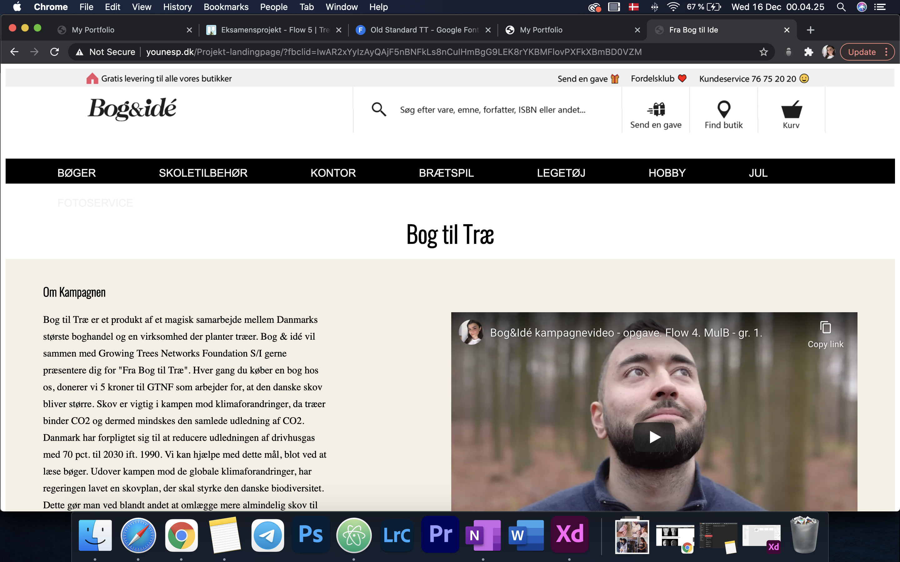
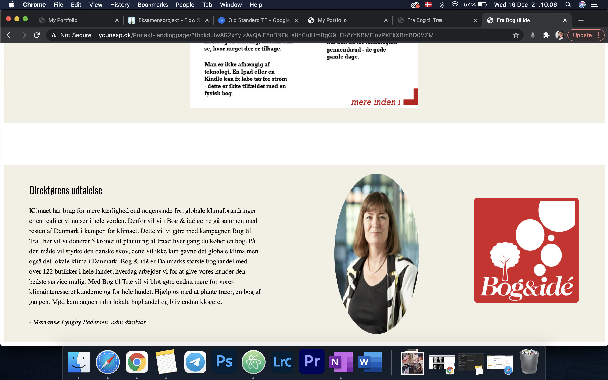
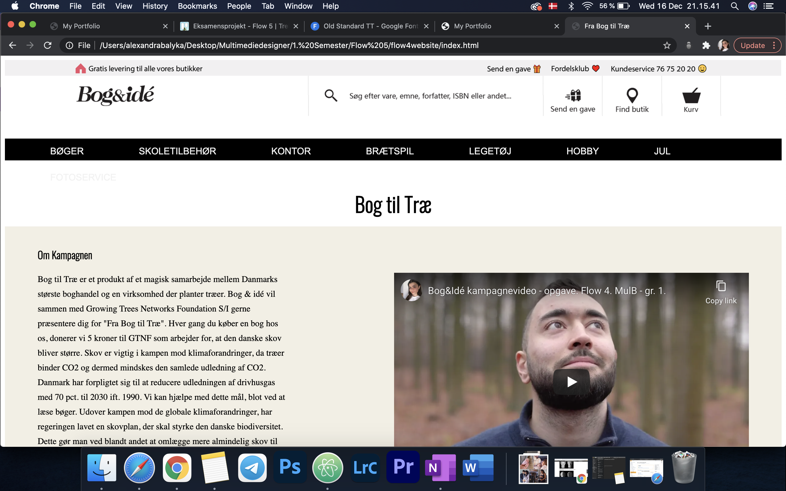
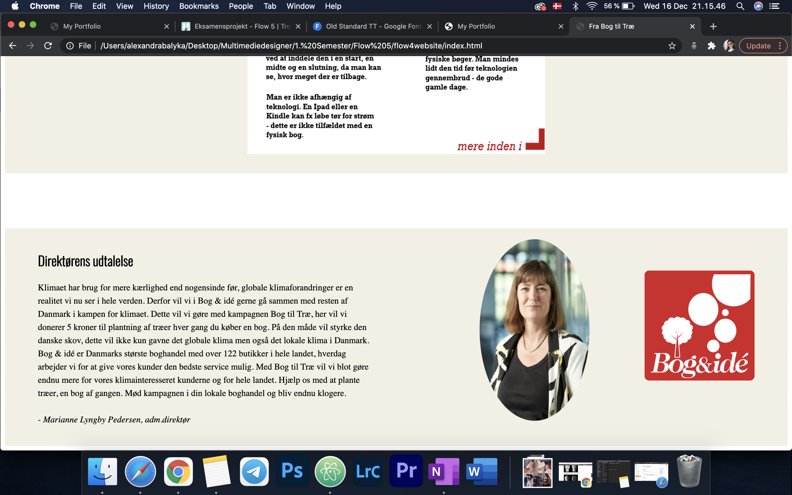

This project was also in groups. This time we had to make a campagne for a store in Lyngby Storcenter - again we had to incooperate one or more of UN's Sustainable Development Goals.
The assignment was to design a landingpage for this campagne, which included video, text and graphics.
Flowproject


We chose to focus on the 13th Goal - Climate Action. With this campagne we wish to create awareness of the effect trees have on the climate. Everytime you buy a book in Bog&Idé, the store donates 5kr. so that more trees can be planted. By doing so they help fight global climate change - and everyone can help.
Feedback
We didn't get any feedback on this project, since we didn't do a presentation.
Changes after the feedback


I've changed a couple of things:
- I've changed the name of the header of the website, since "Fra Bog til Idé" isn't correct.
- I've straighten out the photo of the manager, since it didn't look natural or good.
- I wanted to change the colors, but quickly changed my mind after trying different colors for the boxes. I wanted to change them to red, but it didn't look good, nor was it nice to look at. I tried some other colors, but they didn't look good either. Therefore I went back to the original color - it's neutral, which was what we wanted from the begining.